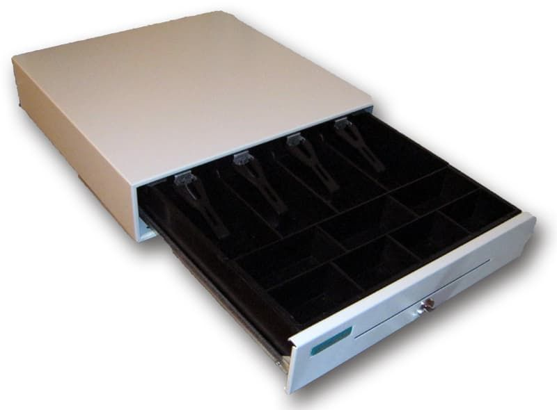

Денежный ящик Меркурий 100
Предназначен для хранения денежной массы кассира при денежных расчетах с населением на контрольно-кассовой машине (ККМ). Денежный ящик выпускается как автономное функционально законченное изделие, без крепления к корпусу ККМ и может применяться с ККМ любого класса - от портативных до POS-терминалов. Основное отличие от ящика Меркурий 100 - это уменьшенные габариты и масса изделия, съёмный отсек для монет (под ним удобно хранить документы, чеки и т.п.). Корпус ящика выполнен из металла в пожаробезопасном исполнении. По заказу потребителя ящик может поставляться в различных вариантах исполнения: с механическим замком, с электромагнитным замком с различными напряжениями управления включения электромагнита, а также с управлением по интерфейсу RS-232.
Основные характеристики:
- Материал – металл.
- Количество ячеек под банкноты – 5.
- Количество ячеек под копейки – 8.
- Размер: 432*428*88 (Д*Ш*В).